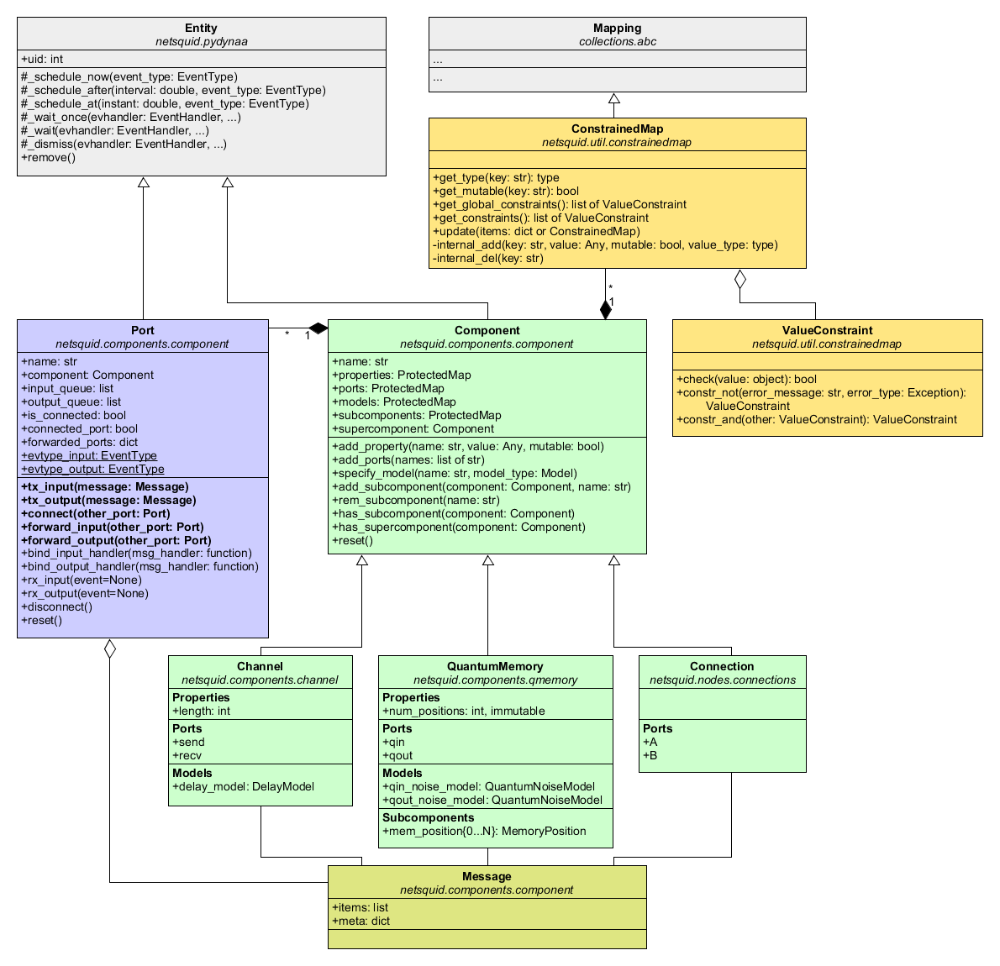

netsquid.components
In NetSquid components represent the physical entities (Entity) of a quantum network,
such as quantum memories (QuantumMemory),
classical channels (ClassicalChannel
and quantum processors (QuantumProcessor).
Components can exist at the nodes (Node) in a quantum network
or within the connections (Connection) that link them,
both of which are examples of composite components.
Components derive from a Component base class.
Schematic overview of the components module:
Modules
- netsquid.components.component
- netsquid.components.channel
- netsquid.components.qchannel
- netsquid.components.cchannel
- netsquid.components.cqchannel
- netsquid.components.qmemory
- netsquid.components.instructions
InstructionIInitISwapIGateIRotationGateIControlledDirectionGateIMeasureIMeasureFaultyIMeasureBellISignalIEmitInstructionErrorINSTR_INITINSTR_SWAPINSTR_UNITARYINSTR_XINSTR_YINSTR_SINSTR_TINSTR_ZINSTR_HINSTR_IINSTR_CXINSTR_CNOTINSTR_CCXINSTR_TOFFOLIINSTR_CSINSTR_CZINSTR_CDIRINSTR_CXDIRINSTR_CYDIRINSTR_CZDIRINSTR_ROTINSTR_ROT_XINSTR_ROT_YINSTR_ROT_ZINSTR_CROTINSTR_CROT_XINSTR_CROT_YINSTR_CROT_ZINSTR_MEASUREINSTR_MEASURE_XINSTR_MEASURE_BELLINSTR_EMITINSTR_SIGNALINSTR_DISCARD
- netsquid.components.qprogram
- netsquid.components.qprocessor
- netsquid.components.clock
- netsquid.components.qsource
- netsquid.components.qdetector
- netsquid.components.switch
- netsquid.components.ccoding